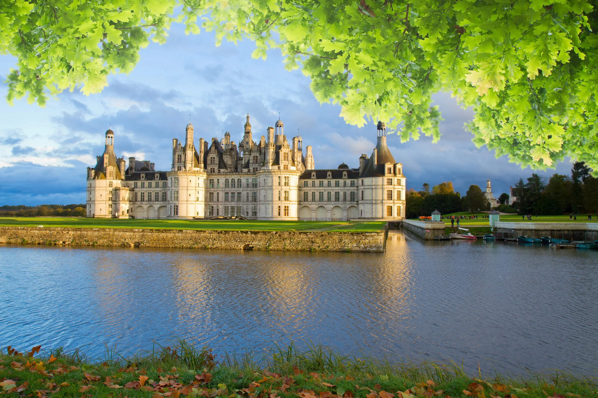

Les différents types de paysages en France
La France est composée de paysages variés qui comprennent des montagnes, des plaines, des plateaux, des vallées et des littoraux. Ces différents milieux naturels offrent une grande richesse écologique et culturelle.
Les montagnes
Les principales chaînes de montagnes en France sont les Alpes, les Pyrénées, le Massif central, les Vosges et le Jura. Les Alpes, par exemple, abritent le Mont Blanc, le plus haut sommet d’Europe occidentale.

Les fleuves et vallées
Les grands fleuves de France, comme la Seine, la Loire, le Rhin, la Garonne et le Rhône, traversent de vastes vallées fertiles. Ces zones sont importantes pour l’agriculture et les activités humaines.
